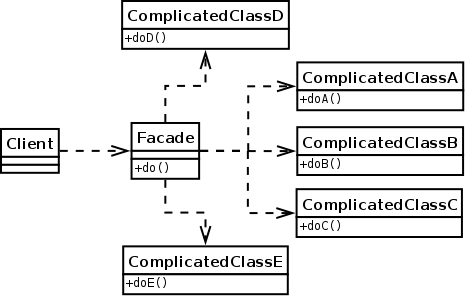

Disponemos de un sistema complejo que, al ser muy flexible, requiere de la configuración de muchos parámetros para conseguir un fin concreto. Por otro lado, nuestro sistema cliente pretende utilizar parte de la funcionalidad que el primer sistema ofrece pero muchas de las operaciones de configuración son siempre las mismas.
Otro problema que trata de solucionar este patrón es el uso de varias interfaces de subsistemas mediante un único punto de acceso.
La solución consiste en crear una clase fachada que proporcione la funcionalidad de manera sencilla a nuestro sistema cliente. Dicha clase utilizará la clase compleja o los distintos componentes de los sistemas requeridos y los ofrecerá por medio de operaciones más simples.
Donde:
Client: Representa al sistema que quiere hacer uso de la clase compleja o el conjunto de susbsistemas mediante la fachada.
Facade: Clase fachada que trata de ofrecer la funcionalidad que demanda el cliente mediante una interfaz sencilla donde, internamente, utiliza las clases complejas.
ComplicatedClassX: Conjunto de clases que se necesitan utilizar y a las que se pretende dar un punto de acceso sencillo mediante la fachada.
Patrones Relacionados: Instancia única, Mediator y Fábrica abstracta.
Un trabajo bien hecho por el alumnado del modulo de Entornos de Desarrollo. 2020